This Dragonflight Enchanting leveling guide will show you the fastest and easiest way how to level your Dragonflight Enchanting skill from 1 to 100.
This Dragonflight Enchanting leveling guide will show you the fastest and easiest way how to level your Dragonflight Enchanting skill from 1 to 100.
Dragonflight Enchanting Trainers
- Soragosa in Valdrakken.
- Veeno in The Waking Shores
- Enchanted Book in The Azure Span.
- Asarin in Ohn'ahran Plains.
Shopping List
These are the approximate materials required to reach 65. The 65-100 part is not included because there are some alternatives from Renown and Specializations. I think buying them later is better.
- 400x
 Chromatic Dust
Chromatic Dust - 180x
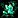
Vibrant Shard - 8x
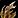
Writhebark - 3x
 Draconium Ore
Draconium Ore - 5x from each:
 Rousing Earth,
Rousing Earth,  Rousing Fire,
Rousing Fire, 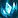
Rousing Frost, Rousing Air - 16x (Any Rousing Element from the 4 above)
Leveling Dragonflight Enchanting
Racials
Blood Elf characters have +5 Enchanting skill because of their passive  Arcane Affinity, and Kul Tiran characters have +2 from the trait
Arcane Affinity, and Kul Tiran characters have +2 from the trait  Jack of All Trades.
Jack of All Trades.
Any extra Enchanting skill means that recipes stay orange for more points. You can save a lot of gold by doing lower level recipes for more points.
1 - 2
Buy a  Serevite Rod from Enchanting Supply Vendors. If you are leveling in Valdrakken, you can buy it from Andoris. (standing near the trainer)
Serevite Rod from Enchanting Supply Vendors. If you are leveling in Valdrakken, you can buy it from Andoris. (standing near the trainer)
1x 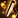 Serevite Rod, 3x
Serevite Rod, 3x  Chromatic Dust
Chromatic Dust
Equip the Runed Serevite Rod.
Disenchanting
If you have any leftover gear from questing, dungeons, world quests, etc., disenchant them before you start leveling as disenchanting can give you skill points up to 25.
First Craft Bonus
You will get 1x Dragon Isles Enchanting Knowledge talent point each time you craft something for the first time. Dragon Isles Enchanting Knowledge is valuable and has a weekly cap from other sources. So, instead of leveling Enchanting and then going back to craft grey recipes, this leveling guide is designed to get the "First Craft Bonus" from everything while they give you skill points.
2 - 5
Enchanting Vellum
You should put all enchants on an  Enchanting Vellum and try selling them at the Auction House.
Enchanting Vellum and try selling them at the Auction House.
When making the enchants, you can select the Vellum as the "Optional Target" in your profession window, so you don't have to click the vellum each time manually. If you are leveling in Valdrakken, you can buy them from Andoris. (standing near the trainer)
- 1x
 Writ of Versatility - 3x Chromatic Dust
Writ of Versatility - 3x Chromatic Dust - 1x
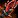
Scepter of Spectacle: Earth - 1xChromatic Dust, 3x Rousing Earth, 1x Writhebark - 1x
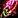
Scepter of Spectacle: Fire - 1xChromatic Dust, 3x Rousing Fire, 1x Writhebark
5 - 15
- 1x Enchanted Writhebark Wand - 6x Chromatic Dust, 2x Writhebark
- 1x Writ of Critical Strike - 3x Chromatic Dust
- 1x Writ of Haste - 3x Chromatic Dust
- 1x Writ of Mastery - 3x Chromatic Dust
Make another 6-7 from any of the Writ Ring Enchants. I'll use the crit one as an example. Skip this if you are already above 15 from disenchanting.
7x  Writ of Critical Strike - 21x
Writ of Critical Strike - 21x  Chromatic Dust
Chromatic Dust
15 - 21
- 1x Runed Draconium Rod - 4x Chromatic Dust, 3x Draconium Ore, 2x Writhebark
- 1x Writ of Avoidance - 1x Vibrant Shard
- 1x Writ of Leech - 1x Vibrant Shard
- 1x Writ of Speed - 1x Vibrant Shard
Equip the  Runed Draconium Rod. Sell the Runed Serevite Rod. You won't need it anymore.
Runed Draconium Rod. Sell the Runed Serevite Rod. You won't need it anymore.
21 - 25
- 2x Writ of Leech - 2x Vibrant Shard (you can make any other Writ Bracer enchants)
- 1x
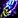
Scepter of Spectacle: Frost - 1xChromatic Dust, 3x Rousing Frost, 1x Writhebark - 1x Scepter of Spectacle: Air - 1x Chromatic Dust, 3x Rousing Air, 1x Writhebark
You might have to make more Bracer enchants if you don't reach 25.
Enchanting Specializations
When you hit 25, you will unlock Enchanting specializations. Pick Enchantment as your first specialization.
DON'T spend any of your knowledge points just yet!!!
25 - 31
- 1x Writ of Avoidance - 12x Chromatic Dust
- 1x Writ of Leech - 12x Chromatic Dust
- 1x Writ of Speed - 12x Chromatic Dust
Make another 3 from any of the Writ Cloak Enchants. I'll use Leech as an example.
3x  Writ of Leech - 24x
Writ of Leech - 24x  Chromatic Dust
Chromatic Dust
31 - 35
4x  Devotion of Versatility - 20x
Devotion of Versatility - 20x  Chromatic Dust, 12x Vibrant Shard
Chromatic Dust, 12x Vibrant Shard
35 - 40
- 1x Devotion of Critical Strike - 5x Chromatic Dust, 3x Vibrant Shard
- 1x Devotion of Haste - 5x Chromatic Dust, 3x Vibrant Shard
- 1x Devotion of Mastery - 5x Chromatic Dust, 3x Vibrant Shard
Make another 2 from any of the Devotion Ring enchants. I'll use Haste as an example.
2x  Devotion of Haste - 10x
Devotion of Haste - 10x  Chromatic Dust, 6x Vibrant Shard
Chromatic Dust, 6x Vibrant Shard
40 - 50
- 1x Illusory Adornment: Air - 2x Chromatic Dust, 2x Rousing Air
- 1x Illusory Adornment: Earth - 2x Chromatic Dust, 2x Rousing Earth
- 1x Illusory Adornment: Fire - 2x Chromatic Dust, 2x Rousing Fire
- 1x Illusory Adornment: Frost - 2x Chromatic Dust, 2x Rousing Frost
Make another 8-9 from any of the Illusory Adornments. I'll use Fire as an example, but you can make the other ones if those Rousing Elementals are cheaper.
8x  Illusory Adornment: Fire - 16x
Illusory Adornment: Fire - 16x  Chromatic Dust, 16x
Chromatic Dust, 16x  Rousing Fire
Rousing Fire
Checking Loamm Niffen Renown
Click on the the Dragon Isles summary on your minimap to check your reputation with the Loamm Niffen faction.
If you DON'T have Renown 20 with the Loamm Niffen faction then make sure to pick Rods, Runes, and Ruses as your second specialization. If you have Renown 20, then it doesn't really matter which one you pick.
50 - 65
33x  Devotion of Avoidance - 165x
Devotion of Avoidance - 165x  Chromatic Dust, 132x Vibrant Shard
Chromatic Dust, 132x Vibrant Shard
How to get the recipe:
- First, check the alternative recipe section below, if you can buy any of them, I recommend using those instead.
- Put 10 Dragon Isles Enchanting points into the Enchantment specialization.
- Learn the Material Manipulation sub-specialization.
- Put 10 points into Material Manipulation.
- Learn Adaptive. This will teach you the
 Devotion of Avoidance recipe.
Devotion of Avoidance recipe.
Alternative Recipes
These recipes are a bit cheaper than the trainer recipe and they don't require knowledge points. So, if you can buy any of the below recipes, you should make them instead.
| Enchant | Reagents | Recipe Source |
|---|---|---|
| 17x |
136x |
Sold by Cataloger Jakes. Dragonscale Expedition - Renown 9 |
| 17x |
136x |
Sold by Rokkutuk. Iskaara Tuskarr - Renown 10 |
| 17x |
136x |
Sold by Dothenos. Valdrakken Accord - Renown 11 |
65 - 76
Make around 14 from one of these enchants. If you don't have the required renown, just skip this step.
You can stop at 76.
| Enchant | Reagents | Recipe Source |
|---|---|---|
| 14x |
56x Vibrant Shard, 14x 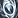 Awakened Air, 14x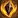 Awakened Earth |
Sold by Quartermaster Huseng. Maruuk Centaur - Renown 8 |
| 14x |
56x Vibrant Shard, 14x Awakened Air, 14x Awakened Earth | Sold by Cataloger Jakes. Dragonscale Expedition - Renown 9 |
| 14x |
56x Vibrant Shard, 14x Awakened Air, 14x Awakened Earth | Sold by Dothenos. Valdrakken Accord - Renown 11 |
76 - 100
To reach 100, you'll need to craft either the 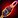 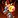 Spark of Ingenuity, which you can only get by completing specific questlines. This section will guide you step-by-step through getting the recipes, gathering Sparks, and crafting the final items to finish leveling Enchanting.
Spark of Ingenuity, which you can only get by completing specific questlines. This section will guide you step-by-step through getting the recipes, gathering Sparks, and crafting the final items to finish leveling Enchanting.
Step 1. #Getting a recipe
Check your Dragon Isle reputation, if you have Renown 20 with the Loamm Niffen, you can buy a recipe that is cheaper to craft than the Wand recipe you can unlock with knowledge points.
You don't have to get both recipes! Get the Loamm Niffen if you have the renown, otherwise get the knowledge point recipe.
Follow these steps to get the recipe:
- Fly to Zaralek Cavern.
- Find Newsy and pick up
 Bartering Boulders and Bundle of Boulders
Bartering Boulders and Bundle of Boulders - If you can't pick up the quests, you already completed them, then head over to Harlowe Marl and buy 10x
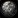
Barter Boulder for 1000x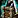
Dragon Isles Supplies. (use currency transfer from your other characters if you don't have enough) - Go to Ponzo, turn in the quests.
- Buy 1x
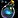
Ponzo's Cream from Ponzo. - Go to Dustmonger Topuiz and buy Formula: Spore Keeper's Baton.
- Learn the recipe. You can now craft Spore Keeper's Baton.
- Put 10x points into the Rods, Runes, and Ruses specialization
- Learn the
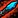
Rods and Wands sub-specialization. - Put 30x points into Rods and Wands. This will teach you Torch of Primal Awakening.
To learn the Torch of Primal Awakening recipe, you will need 40 Knowledge points in total. If you followed the guide from the start and crafted every recipe you should have 5 or 25 points depending on if you unlocked a recipe with knowledge points at 50.
Getting more Knowledge Points
So, you will need an additional 15 or 35 points. Here are the fastest ways to get more points:
- 5x points from talking to Shalasar Glimmerdusk. She is on the second floor of broken tower.
- Dragonscale Expedition Renown: 5x points at Renown 14 and another 5x at Renown 24. Talk to Boss Magor.
- Iskaara Tuskarr Renown: 5x points at Renown 14 and another 5x at Renown 24. Talk to Rokkutuk.
If you don't have enough renown to get the points above, or you need more, I recommend to collect Enchanting treasures until you have enough points. You will get +3 Knowledge points for each treasure you collect. You have to disenchant the treasure to get the knowledge points.
| Item Name | Zone | Coords |
| Flashfrozen Scroll | The Waking Shores | /way #2022 57.5 83.6 |
| Lava-Infused Seed | The Waking Shores | /way #2022 68.0 26.8 |
| Enchanted Debris | The Waking Shores | /way #2022 57.5 58.5 |
| Forgotton Arcane Tome | The Azure Span | /way #2024 38.5 59.1 |
| Faintly Enchanted Remains | The Azure Span | /way #2024 45.1 61.2 |
| Enriched Earthen Shard | The Azure Span | /way #2024 21.6 45.5 |
| Lava-Drenched Shadow Crystal | Zaralek Cavern | /way #2133 48.00 17.00 |
| Resonating Arcane Crystal | Zaralek Cavern | /way #2133 36.66 69.33 |
| Shimmering Aqueous Orb | Zaralek Cavern | /way #2133 62.39 53.80 |
| Everburning Core | Emerald Dream | /way #2200 46.16 20.51 |
| Pure Dream Water | Emerald Dream | /way #2200 38.37 30.20 |
| Essence of Dreams | Emerald Dream | /way #2200 66.36 74.20 |
Step 2. #Dragonflight campaign quests
To get Spark of Ingenuity, you must complete the Dragonflight main story campaign quests until you unlock World Quests. This is ACCOUNT-WIDE, so you only need to complete these quests with one of your characters. If you open your quest log, you will find these quests at the top in the campaign section under the "Dragonflight" title. If you played during Dragonflight you probably already completed this step.
- Complete the Dragonflight campaign quests until you get Renown of the Dragon Isles from Alexstrasza the Life-Binder.
- Talk to Therazal to complete Renown of the Dragon Isles.
Step 3. #Engine of Innovation Questline
Pick up the  Learning Ingenuity quest from Therazal. This quest will start the Engine of Innovation Questline that will award you with Spark of Ingenuity.
Learning Ingenuity quest from Therazal. This quest will start the Engine of Innovation Questline that will award you with Spark of Ingenuity.
Talk to Greyzik Cobblefinger to complete  Learning Ingenuity and pick up the
Learning Ingenuity and pick up the  Jump-Start? Jump-Starting! quest.
Jump-Start? Jump-Starting! quest.
If you have already completed the Engine of Innovation Questline with one of your characters, you don't have to do it again. Talk to Greyzik Cobblefinger to skip the quests, and then talk to Maiden of Inspiration to get your 5x  Spark of Ingenuity.
Spark of Ingenuity.
Otherwise, you need to complete the entire Engine of Innovation Questline until you get all five  Spark of Ingenuity. (Takes around 25-30 minutes with a max level character.)
Spark of Ingenuity. (Takes around 25-30 minutes with a max level character.)
Step 4. #Getting more Sparks
To level to 100, you will need another 3x  Spark of Ingenuity. Unfortunately, you can't get more than 5 on one character. However, you can use the crafting order system to send crafting orders to your own characters, so you can get more from your alts or by creating trial characters.
Spark of Ingenuity. Unfortunately, you can't get more than 5 on one character. However, you can use the crafting order system to send crafting orders to your own characters, so you can get more from your alts or by creating trial characters.
Creating a trial character
If you have a level 58 alt characters, you can skip this part and use them instead of creating trials.
- Go to the character selection screen and click "Create New Character" in the bottom left corner.
- On the character creation page, tick the "Class Trial" box in the bottom left corner.
- Choose any class and talents, then create your Character.
- Go to the portal room in Orgrimmar/Stormwind and click on the Valdrakken portal.
Skipping quests to get 5x Sparks
- Use your alt or trial character to talk to Greyzik Cobblefinger about skipping the quests, and then talk to Maiden of Inspiration.
- Talk to the crafting order NPC Clerk Silverpaw in Valdrakken.
- Click on Weapon -> One-handed -> Wands, then click "Search" and pick Spore Keeper's Baton or Torch of Primal Awakening.
- Change Public Order to Personal Order in the top right, then type in your main character name.
- You don't have to fill in materials besides the Spark of Ingenuity in the "Spark" slot. You can fill the rest of the materials with your main.
- Repeat these steps above until you send 3 crafting orders to your main. (or more if you need more skill points)
Step 5. #Crafting the Wands
- Log in with your main character, and go to the Enchanting crafting table in Valdrakken. (it's near your trainer)
- Open your profession window and click the Crafting Orders tab at the bottom.
- Click on the Personal Tab and complete the crafting orders from your alts.
- Use your sparks to craft 5x more wands.
Total Mats Needed
Below are the total mats needed to craft the recipes 8 times. You only have to craft 8 from one of them.
| Item | Reagents |
|---|---|
| 8x Spore Keeper's Baton | |
| 8x Torch of Primal Awakening |
|